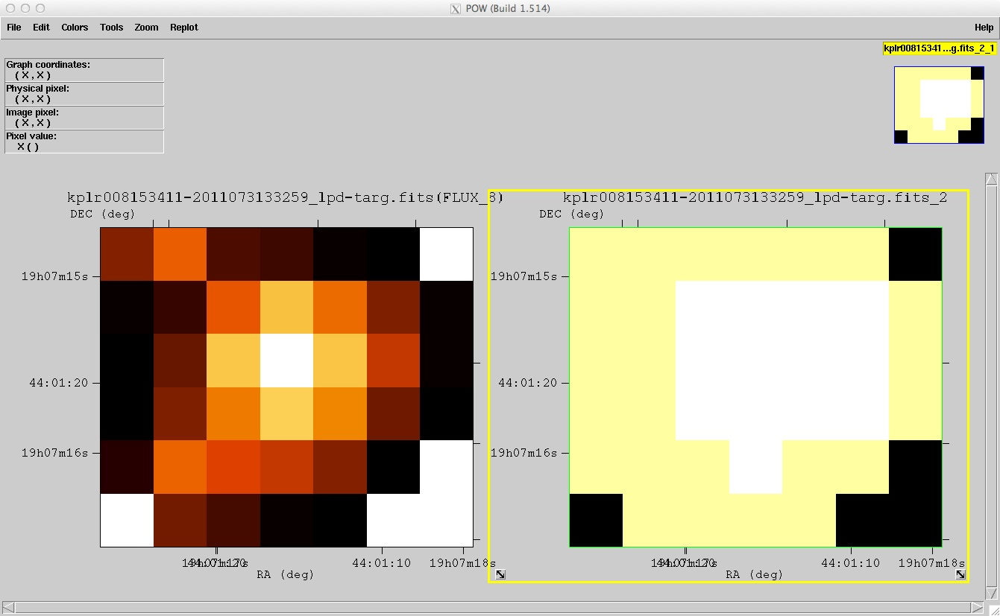

The official archive for TESS mission data products is the Mikulski Archive for Space Telescopes (MAST) which is hosted at the Space Telescope Science Institute (STScI).
In the following sections we list the main products from TESS, and we describe a few of the products in some detail. For tools and tips on inspecting and analyzing TESS data, users should check out this page.
We encourage users of TESS data to read through the (documentation associated with the TESS data products)[documentation.html]. The first port of call for the TESS user is the TESS Observatory Handbook.
TESS product overview
The TESS mission page at MAST contains the latest news and updates on TESS products. The following TESS data products and catalogs will be available through MAST:
Data products at MAST
- Two-minute cadence target pixel files
- Two-minute cadence light curves <!-- * Data validation time series files
- Full frame images (calibrated and uncertainty files)
- Cotrending basis vectors files
- Simulated Data files
- Artifact removal pixel files
- Background pixel files
- Collateral files
- Reverse clock files
- Ancillary engineering files
- Latest SPICE kernels (bsp and tsc binary files) -->
Catalogs at MAST
- TESS Input Catalog (TIC)
- Candidate Target List (CTL) <!-- * Revised stellar parameters of Kepler targets (Q1-Q16)
- Revised stellar parameters of Kepler targets (Q1-Q17)
- Kepler Objects of Interest (KOI)
- Kepler/GALEX cross match catalog
- False positive working group tables -->
- Observed targets by quarter
Main data products
A few of the data products from TESS are described below. For a comprehensive list of available products.
Full frame images (FFIs)
Describe...

Target pixel files (TPFs)
Describe...
The image is a Kepler TPF for now.

Light curve files
Collateral data
Auxiliary data products
Cotrending basis vectors (CBVs)
CBVs will be provided for each operational sector of the mission. These are derived by the TESS pipeline from a Principle Component Analysis and used to mitigate for systematic artifacts within the the target light curves. If TESS users see residual systematic problems within their light curve data, the CBVs can be employed in performing a manual photometric correction, more tailored towards the users science.
Point Spread Functions (PSFs)
Simulated Data
During development of space mission, the ground-segment goes through several tests known as Ground System Interface Test (GSIT). To aid potential TESS users in the development of tools and to assess the feasibility of investigations, the mission is planning to make available data from the GSIT-2 test. This will be available from the MAST. The anticipated date for this being made available is late-June.